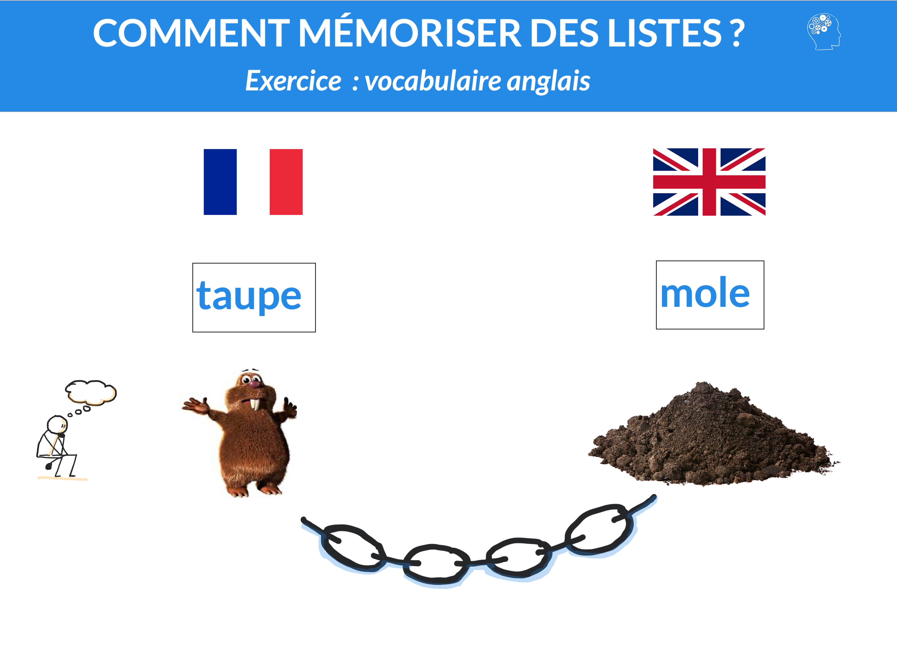
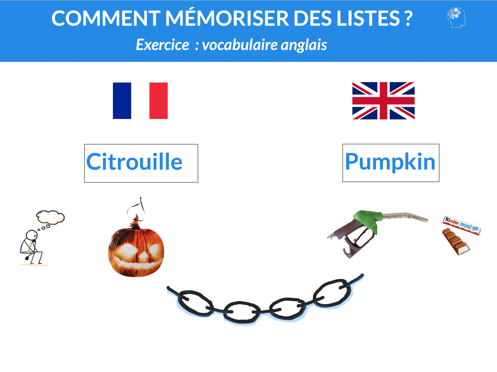
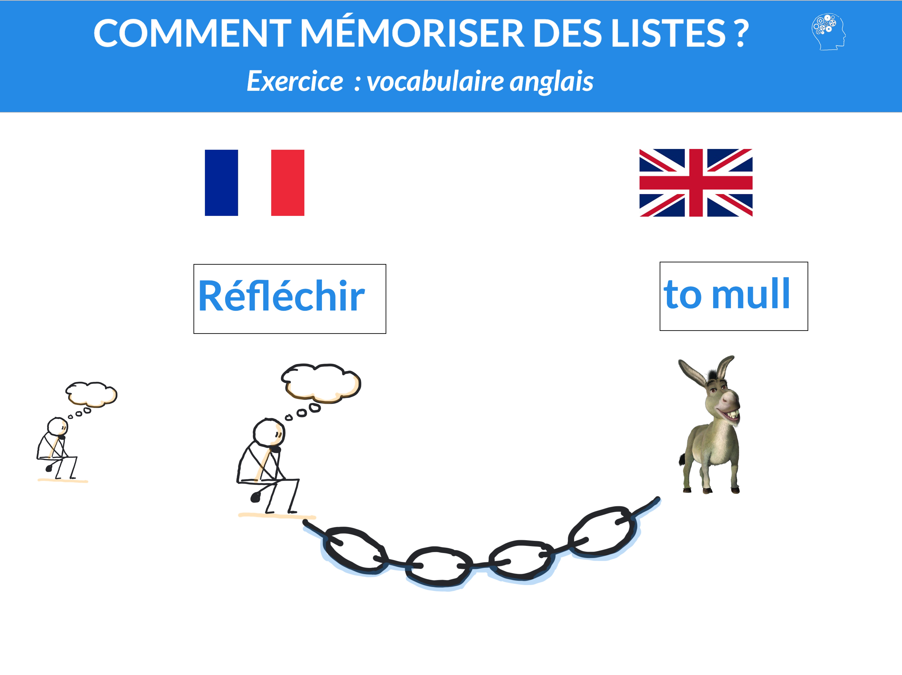
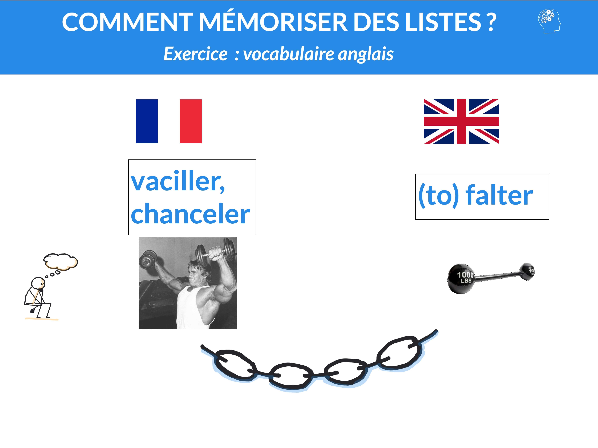

INTRODUCTION
Ceci est ma Quatrième Séance.
Dans cette séance, je vais vous montrer comment vous pouvez apprendre du vocabulaire anglais facilement à l’aide de la technique que nous
avons déjà vue (la technique de la chaîne).
Je précise que je ne recommande cette technique que si vous devez apprendre des mots de vocabulaire sous forme de liste ! Cette technique
vous permettra de retenir mieux et plus longtemps la traduction de vos mots de vocabulaire et, si vous êtes à l’aise avec cette technique,
de le faire beaucoup plus rapidement.
Nous verrons très bientôt un autre moyen pour retenir les mots en contexte et avec leur prononciation lorsque nous verrons ce que l’on
appelle « la courbe de l’oubli ».
COMMENT RETENIR DES NOMS EN ANGLAIS
Comme précédemment, il s'agit de de donner du sens à ce qui n'en a pas pour vous :
il faut rendre l’information « mémorable » grâce
à notre imagination. Je vais vous montrer la technique sur un premier exemple en utilisant ce que m'a proposé un élève.
En anglais, le mot "taupe" se dit "mole". La 1ère étape consiste à trouver des images mentales les plus spontanées possibles
pour que l'évocation de ces 2 mots entraînent automatiquement ces 2 images mentales. Le mot "taupe" m'évoque irrémédiablement "René la Taupe".
Le mot "mole", prononcé à la française, évoque l'adjectif "molle".
La deuxième étape consiste à associer les deux images mentales dans une histoire que l'on va prendre la peine de visualiser dans notre tête
en mouvement et rendre la plus vivante possible. Voici ce que m'a proposé un élève : "René la Taupe se trémousse devant nous et puis, tout à coup,
plonge la tête la 1ère dans la terre MOLLE". Cette association sera suffisante pour vous rappeler que le mot "taupe" se dit "mole" !

Un deuxième exemple : le mot "citrouille" se dit "pumpkin". Qui dit "citrouille" m'évoque "Halloween" et le mot "pumpkin" répété en boucle dans
ma tête (à la française)
m'évoque les mots "pompe" et "KINder". J'imagine donc un gamin avec un masque de tête de citrouille pendant la fête d'Halloween aux États-Unis qui
toque à une porte pour demander des bonbons. Une grand-Mère très bizarre ouvre la porte, visiblement très contente de la visite. Le gamin tend son
sac en avant en l'ouvrant devant elle... Et là, elle prend
une pompe à essence et actionne la poignée : il en sort des KINders.

Donc, n'hésitez pas à trouver des associations personnelles (cela fait appel à la mémoire dite
« épisodique » ). À vous de trouver une image
mentale qui vous fera penser immédiatement au mot français ou au mot anglais. Un autre point important : si vous n'avez pas le choix,
utilisez la technique que j'ai évoquée. Mais il se peut que vous fassiez aussi un lien logique ! Par exemple, "pumpkin" peut vous évoquer
un personnage d'une série, d'une bande dessinée ou d'un film...auquel cas, vous êtes peut-être en train de comprendre pourquoi le personnage
s'appelait "pumpkin" : ce genre d'association par la logique marche aussi très bien ! Ne vous en privez pas !
COMMENT RETENIR DES VERBES EN ANGLAIS ?
Pour les verbes, vous pensez peut-être que c'est plus difficile mais en fait, cette technique
vous permet sans problème de rajouter du contexte. Par exemple, le verbe "(to) mull" signifie "cogiter, réfléchir intensément".
Je vois donc une mûle (un mûlet pour les élèves...) en position de réflexion intense ! Cette simple image permet de rajouter
du contexte pour ce verbe qui ne veut pas simplement dire "réfléchir" :

De même, le verbe "(to) falter" signifie "vaciller, chanceler". Cela me fait penser à "faux haltères"...
Je vois donc Arnold Schwarzenneger (pour les jeunes : le type qui a joué le Terminator) en train de s'entraîner et qui tout
à coup perd l'équilibre (il chancelle...). On se rend compte alors qu'il avait de faux haltères (gonflables, par exemple...) :

LE PROBLÈME DE L'OUBLI DANS LES LANGUES
Vous avez certainement déjà été confronté à cette situation : vous avez appris votre cours, vous le connaissez
bien et, une semaine après, vous vous rendez compte que vous en avez déjà oublié une grande partie ! C'est d'autant plus rageant
que votre cerveau, lui, se rappelle bien des efforts que vous avez dû déployer et de la peine subie pendant l'apprentissage de
votre cours ! Vous avez l'impression d'être comme le héros mythologique appelé Sisyphe qui fut condamné par Zeus à faire rouler
éternellement un rocher au sommet d'une colline,
lequel rocher dégringole ladite colline lorsqu'il est parvenu au sommet.
Ce phénomène d'oubli, que l'on pourrait appeler "effet Sisyphe" est particulièrement courant dans les matières comme les
Langues Vivantes où on apprend souvent de manière besogneuse des tas de mots...que l'on a complètement oubliés 1 mois plus tard !!!
Cela me permet d'insister sur un point crucial : quelle que soit la technique de mémorisation, si vous ne contrez pas ce phénomène
d'oubli, tout effort aura été inutile et entraînera de la déception et de la frustration !!!
C'est pourquoi je vous parlerai dans la prochaine séance de la fameuse "courbe de l'oubli" ainsi que des solutions pour ne plus
oublier ! Selon moi, c'est souvent le problème n°1 (bien plus que la mémorisation en elle-même mais les élèves ont tendance à
complètement négliger l'oubli).